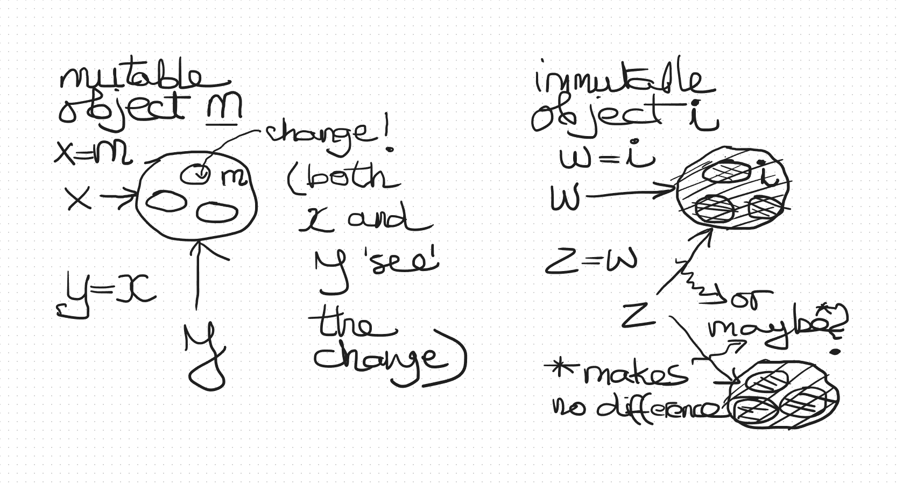

-
What is a class?
What is a class?
In a programming language, a class:
- is a specific blueprint for objects
- represents the type of any object based on it as a blueprint
- bundles data and associated behaviour together
In Python:
- everything is an object and any object has a class underlying it
- 'type' and 'class' are interchangeable (when we call type(x), it returns the class of x)
- some classes are built in (e.g. int or list), but new ones can be defined (this is what we are doing in this lesson)
- even classes are objects and have a class, type (they are in fact 'meta-objects' as they describe other objects)
Try the following expressions in the Python command line, or wrapped in a print() call in PyCharm.
type(4) type(int) type("abcd") type(str) type([2, 3, 4]) type(list)Why define new classes?
- We use programming to solve real-world problems. Thus, the better programming language constructs match real world 'constructs', the easier it will be to model the real world in a program and the easier it will be to understand a program once it is written.
- When observing the real world, we tend to think about it in terms of 'things' first and then actions performed by and on those things1. This means that a construct that represents a 'thing' should be a good idea and that is exactly what classes are.
- A class, however, does not represent any one thing. Rather, it represents a category (i.e. class!) of things.
- A class definition contains information about a category of things:
- the different attributes it has
- the different actions that can be performed on it
- relationships with other categories
- The picture below is a UML class diagram. You do not need to understand all the details at this stage, but each box in the diagram shows a class. The top section of each box contains the class name, the next section the class attributes/properties and the bottom section the class methods (these are essentially functions attached to any object of this class and represent the actions that can be performed on this category of thing).
Example class diagram in UML 
- Working with classes
- makes it easier to think about requirements, as concepts are separated
- makes design and implementation more intuitive
- allows for easier division of labour in team projects
- brings reuse into the domain of 'things' in the same way that functions allow the reuse of 'actions'
[1] Of course, there might not be anything that fundamentally precludes the view of the world where action is primary and things only secondary to it, but this does not seem to be the way most people think.
-
Defining and using a class in Python
Defining and using a class in Python
Class definition syntax
We use the class construct to define a new object type.
In Python a class is defined using the following syntax:
A simple class defined in Python class ThreeFour: def __init__(self): self.x = 3 self.y = 4 def print(self): print("x is: ", self.x) print("y is: ", self.y)class The keyword ThreeFour A user-defined name for the class, which must follow Python naming rules; is in CamelCase by convention the colon (:) A mandatory part of the syntax everything below the first line The body of the class, in which all top-level instructions (in the example, the two function definitions) must be indented equally __init__() The class constructor, always called __init__. This method is called when an object of this class is created. print() A member function (i.e. a method) self The first parameter of any member function, including the constructor, represents the object of type ThreeFour on which the method was called at runtime. The name self is always used, by convention, for this parameter. self.x
self.yMember variables are defined and initialised on the object in the constructor. If defined in the constructor, they can be accessed from other member methods of the class.
Using a class
- Once a class is defined, we can create objects of that class. This is called instanciation.
- To instanciate a class, we use the class name as a function, passing any arguments required by the constructor, except for self (threeFourObj = ThreeFour() in the picture).
- To call a class method on an object, we use the dot notation, specifying the object and the method, separated by a fullstop (threeFourObj.print() in the picture). The argument list does not contain an argument for the first (self) parameter, because the object preceding the fullstop is in fact the first argument.
Creating an object of a defined class threeFourObj = ThreeFour() threeFourObj.print() print(threeFourObj.x) threeFourObj.y = 44 print(threeFourObj.y)
threeFourObj = ThreeFour() An object of type ThreeFour is created and assigned to variable threeFourObj. threeFourObj.print() Dot-notation is used to run the method print of class ThreeFour on object threeFourObj. print(threeFourObj.x) Uses dot-notation to read member variable x threeFourObj.y = 44 Uses dot-notation to access member variable y for writing
-
Method parameters
Method parameters
Let's look at class with methods that have parameters other than the first one (i.e. other than self)
Parameters class TwoNumbers: def __init__(self, num1, num2): self.num1 = num1 self.num2 = num2 def print(self, heading=""): print("") if heading != "": print("----- {} -----".format(heading)) print("num1 is: ", self.num1) print("num2 is: ", self.num2) twoNumObj = TwoNumbers(3, 4) twoNumObj.print() twoNumObj.print("THE TWO NUMBERS")__init__(self, num1, num2) The constructor includes two parameters other than self. These are used to initialise instance member variables self.num1 and self.num2. print(self, heading="") The print method includes one parameter other than self. This is used to pass in the heading text and has the empty string as its default value. twoNumObj = TwoNumbers(3, 4) The object is constructed with arguments 3 and 4. The value of self does not need to be passed in in any way (it does not exist before the construction call is made). twoNumObj.print() The print method is called without any arguments, indicating that the default value should be used for the heading parameter. The object twoNumObj, specified to the left of the fullstop is the first argument i.e. the value given for the self parameter i.e. the object on which the method is being called. twoNumObj.print("THE TWO NUMBERS") The print method is called with the "THE TWO NUMBERS" argument. This value is assigned to the second function parameter, heading. As above, the value given for the self parameter of the function is the object twoNumObj.
-
More about member variables
More about member variables
Member variables in Python are also called attributes.
Instance vs. class member variables
We have already seen instance member variables in the previous examples:
- each object has its own copy of this type of variable
- an instance variable must be defined in the constructor
- it is accessed via the object: object_name.variable_name
There are also class member variables:
- there is only one copy of this kind of variable
- it is stored outside of the individual objects and shared by all objects of the class
- a class variable is defined in the body of the class definition
- it can be accessed in two ways:
- via the class: class_name.variable_name
- via the object (but only if an instance member variable of the same name does not exist): object_name.variable_name
Types of member variables class TwoNumbersV2: heading = "THE TWO NUMBERS" def __init__(self, num1, num2): self.num1 = num1 self.num2 = num2 def print(self): print("") if self.heading != "": print("----- {} -----".format(self.heading)) print("num1 is: ", self.num1) print("num2 is: ", self.num2) twoNumObj = TwoNumbersV2(3, 4) twoNumObj.print()heading = "THE TWO NUMBERS" A class member variable definition self.num1 = num1
self.num2 = num2Instance member variable definitions
Let's have a look how access to class variables works.
What happens?Class member variables class Simplissima: x = "a" s1 = Simplissima() s2 = Simplissima() print(Simplissima.x) print(s1.x) print(s2.x)Simplissima.x Class variable access via class - recommended s1.x Class variable accessed via object
class Simplissima: x = "a" -------------------------- print(Simplissima.x) output: a object s1: no x object s2: no x --------------- --------------- print(s1.x) print(s2.x) own x not defined own x not defined so get class x so get class x output: a output: aAdding onto the code in ?:
What happens now?Accessing class variables (continued) s1.x = "hello" print(Simplissima.x) print(s1.x) print(s2.x)
s1.x An object variable called x is added. This will hide the class variable, regardless of whether it is added externally like above or internally via self.x = "hello" inside a method of the class.
class Simplissima: x = "a" -------------------------- print(Simplissima.x) output: a object s1: x = "hello" object s2: no x ---------------------- --------------- print(s1.x) print(s2.x) own x is set own x not defined so print own x so get class x output: hello output: aDefine a class that has a name and an id as instance member variables. The name should be passed into the constructor. The id should be unique and generated from a class member variable that stores the last id used.
Define a print method for the class. It should print the id and the name of the object, with suitable headings.
Create three objects of the class, then call the print method on each one of them.
Dynamically adding instance member variables
Instance variables can be added to already created objects. We have seen this already in ?, where an instance (object-bound) variable x was created on the object s1 after it was constructed. For most purposes this is not recommended as it breaks the original class definition. In this module, you should not be doing this, except in the following exercise.
Copy the following code into a Python script file. Run the script.
class Test: def __init__(self): self.x = 1 def print(self): print("----- Test -----") print("x is: ", self.x) print("y is: ", self.y) to = Test() to.print()An error is reported. What do you think happened?
Now add the following line just before the print statement at the end of the file:
to.y = "hello"
-
Underscores in member names
Underscores in member names
Some programming languages have constructs that allow controlling access to variables and methods in classes. In Python all variables and methods in a class are accessible (public). However, there is a convention in naming them that indicates to class users what the intention of the class developer was with respect to variable and method levels of access.
Naming convention for variables and methods class MixedUp: def __init__(self) self.x = "a" # public self._y = "b" # private self.__z = "c" # mangledx (name with no underscores) A public variable or method, intended for access from anywhere _y (one leading underscore) A private variable or method, not intended to be accessed with dot-notation on the object (i.e. from outside of the object) __z (two leading underscores) A private variable or method, as above, but also 'mangled' (prefixed with class name) by the Python interpreter to make external use harder __init__ (two leading and two trailing underscores) These names are called dunders and denote Python-internal attributes and methods While nothing stops developers from not complying with the convention, doing this could be considered 'hacking', as it means not using someone else's code in the way it was intended.
-
Classes as variable types
Classes as variable types
Immutable and mutable objects
We have already seen that all values assignable to variables in Python are objects and that these objects can be immutable or mutable.
- When dealing with mutable objects it is important to remember that
- variables are a kind of pointer to the actual value of the object (they do not contain the object)
- assigning one variable to another simply creates another such pointer to the same object
Examples: lists, objects created from developer-defined classes
- When dealing with immutable objects the representation of the object is not of interest but only its value.
Examples: integers, booleans, strings, tuples
Variables referring to mutable and immutable objects Global and local variables
We have seen that there are global and local variables, as well as class and instance member variables. Any of these can 'contain' (i.e. refer to) an object of a developer-defined class.
We have seen multiple examples of global variables being assigned a class instance object e.g. s1 and s2 in ?.
The following example shows a local variable (address) holding an object of type Address).
Local variable holding object class Address: def __init__(self, n, s, t): self.number = n self.street = s self.town = t def print(self): print("Address: {} {}, {}".format(self.number, self.street, self.town)) def get_a_sample_address(town): address = Address(1, "Main Street", town) return address get_a_sample_address("Sometown").print()Member variables
A member variable is no different from any other variable in the way it refers to an object. The following example uses the class Address from ?. Here the class Person includes a member variable called address of type Address.
A class as the type of a member variable value class Person: def __init__(self, n, s, a): self.name = n self.surname = s self.address = aCopy the definition of class Address from ? and the definition of class Person from ? into a Python script. Add the method print to the class Person and implement it so that it prints the name and the surname, with a heading, on one line, and prints the address, using the existing method of the Address class, in another line. In the script, also define a variable of type Person, then call the print method to print it.
In this exercise we will test the "pointer" nature of variables, which is important to keep in mind when programming in Python.
Copy the Address and Person classes used before into a new Python script.
To class Person, add a method called move. This method should increase the number in the address by 1.
Create a new address object. Now use the Person class to create two people living at that address, by passing in the already created address object to both constructors. Call print on each of the Person objects.
Next, call move on one of the Person objects and again call print on each of the Person objects.
What happened? Explain why. What kind of scenario does this behaviour match?
How would the code need to be modified to match the alternative reasonable scenario?
Objects in collections
Objects of any type can be in collections such as lists. If a member of a collection is an object of a class, it is (as usual) in fact a 'pointer' to that object.
A list shallow copy will copy these pointers to the new list. A list deep copy will also create copies of the objects for the new list.
Using the class Person defined earlier, create three persons in a list. Make one shallow and one deep copy of the list. Write a function to print person lists, then use it to print out the three lists.
Now make a modification to one of the objects in the original list. Print out the three lists again and analyse the result.
Finally, replace a different object in the original list with a new Person object. Print out the three lists again and analyse the result.
- When dealing with mutable objects it is important to remember that
-
What is a class?
-
Defining and using a class in Python
-
Method parameters
-
More about member variables
-
Underscores in member names
-
Classes as variable types
Jelena Vasić